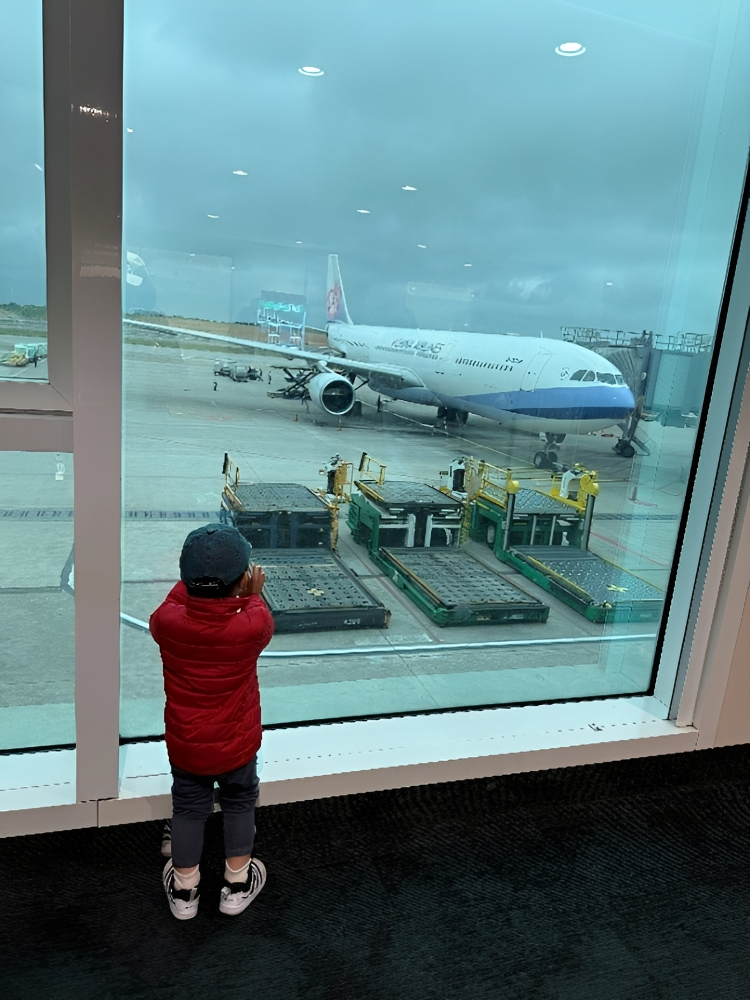
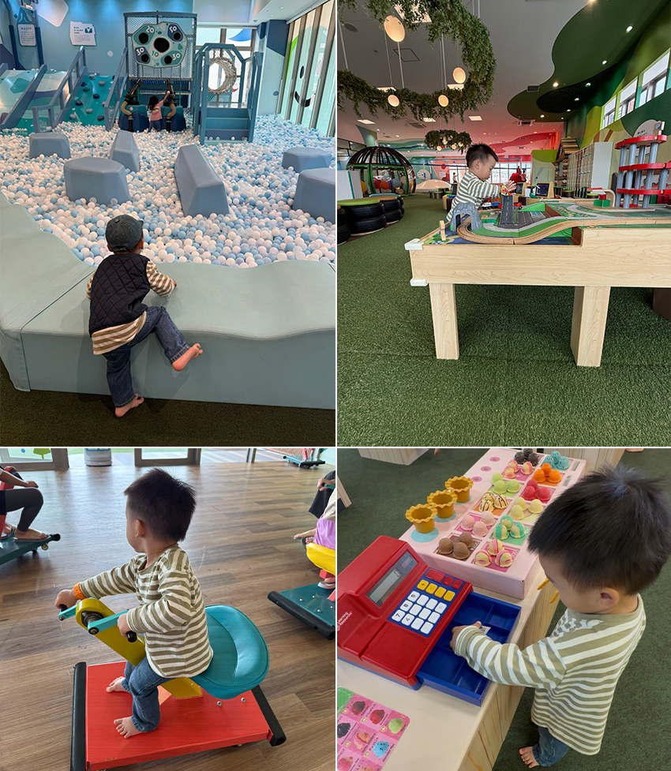

這趟神戶四天三夜自由行，我們沒有把行程排得太滿，每天都像在城市裡漫步，慢慢走、慢慢看，用最舒服的步調，去感受神戶獨有的節奏與魅力。
Day 1 – 旅程慢慢展開（關西機場 → 神戶三宮 → 神戶港）
抵達關西機場後，我們搭乘直達巴士前往神戶三宮，省去轉車的麻煩，對帶著孩子旅行來說相當友善。三宮是神戶的交通與生活中心，整體氛圍舒適宜人，不像大阪那樣擁擠，卻同樣擁有完善的商店街、美食選擇與便利的交通網絡。我們選擇在三宮車站附近的飯店入住三晚，少了每天整理行李、換飯店的壓力，旅程自然也輕鬆不少。
安頓好行李稍作休息後，我們步行前往神戶港。神戶港是日本兵庫縣神戶市的重要港灣，也是國際貿易的樞紐之一。遠遠就能看見神戶港最醒目的地標─「神戶塔」，紅色的塔身在天色漸暗時格外顯眼。緊鄰神戶塔的「臨海公園」，是散步與拍照的絕佳地點，尤其是熱門打卡點「BE KOBE」紀念碑，總是吸引不少旅人駐足。沿著海岸線慢慢走，看著船隻進出港灣，燈光倒映在水面上，整個城市像是靜靜地亮了起來。那一刻，腳步不自覺地放慢，只想好好享受這份屬於神戶的夜色與浪漫，也為第一天畫下溫柔的句點。
 |
Day 2 – 美景與美食的一天（北野異人館 → 天滿神社 → 神戶牛排 → 生田神社 → 布引香草園纜車 → 商店街）
早上，我們搭乘觀光巴士前往北野異人館。沿著坡道前行，一棟棟保存良好的西洋建築錯落其間，讓人有種走進歐洲小鎮的錯覺。途中經過那間造型獨特的星巴克，更是讓人忍不住多看幾眼。接著前往附近的天滿神社參拜，這裡環境清幽，站在高處俯瞰神戶市區，讓人心情也跟著開闊起來。
中午的重頭戲，當然是神戶牛排。主廚在鐵板前專注料理，油花分布均勻的牛肉在高溫下滋滋作響，香氣撲鼻。入口瞬間化開的口感，讓人完全理解它為何享譽世界。建議大家一定要提前網路預約，以免熱門店家一位難求。
下午前往市中心的生田神社，雖身處繁華地段，卻依然能感受到寧靜的氛圍。隨後搭乘布引香草園纜車緩緩上山，車廂越升越高，整座神戶市與港灣景色逐漸在腳下展開。山頂的香草園花草扶疏，空氣中瀰漫著淡淡香氣，是都市中難得的恬靜時光。傍晚回到三宮商店街，隨意逛街、覓食，沒有壓力地結束充實又美好的一天。
 |
Day 3 - 海邊、公園與世界遺產的交會（舞子公園 → 明石魚之棚商店街 → 姬路城 → 好古園）
這天的行程稍微拉遠，我們先搭地鐵前往舞子公園。明石海峽大橋就在眼前，橋身橫跨海面，氣勢磅礴。站在海邊遠望，海天一線的景色讓人心胸頓時開闊，是非常適合放慢腳步、深呼吸的地方。
中午轉往明石魚之棚商店街，這裡充滿在地生活感，海鮮攤位與小吃店一字排開，熱鬧卻不雜亂。明石盛產章魚，現點現做的明石燒熱騰騰上桌，口感柔軟、滋味鮮甜，讓人一口接一口。
下午來到此行的文化重點─「姬路城」。潔白的城牆在陽光下顯得格外耀眼，精巧而層層設計的防禦結構，讓人深刻感受到昔日城堡的威嚴與智慧。緊鄰的好古園則呈現完全不同的風景，日式庭園靜謐雅致，池水、松樹與步道相互呼應，讓人不知不覺放慢腳步，在這片寧靜中停留更久。
 |
Day 4 - 帶著滿滿回憶回家（大阪臨空城 → 關西機場返台）
旅程最後一天，我們往機場方向移動。登機前先到大阪臨空城Outlet做最後的採購，替旅程補上幾袋戰利品。隨後前往關西機場，帶著滿滿的照片與回憶，搭機返台，為這趟神戶之旅畫下圓滿句點。
神戶是一座非常適合自由行的城市，不擁擠、不喧鬧，卻有剛剛好的景點密度與多元風景，讓人走得輕鬆、看得自在。這趟四天三夜的旅行，留下的是一段舒服，且值得反覆回味的美好記憶。